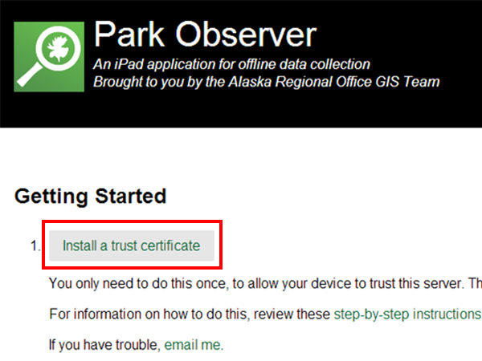
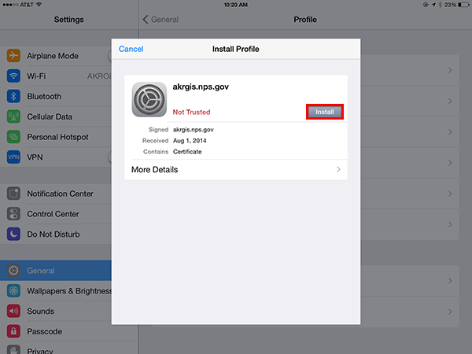
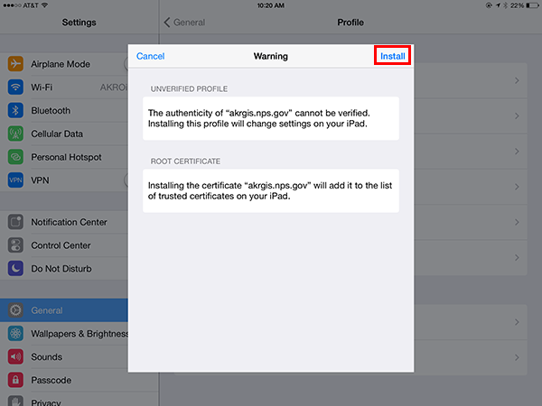
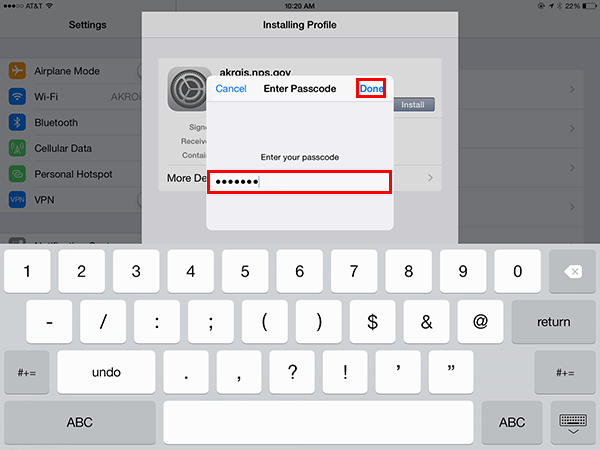
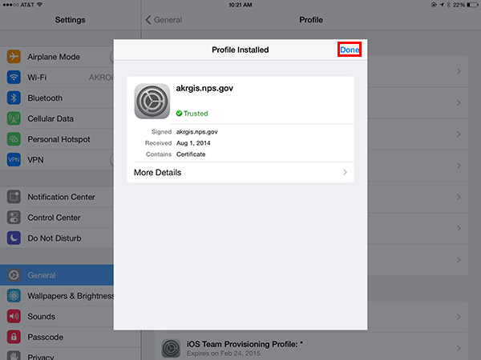

Installing the Trust Certificate
The following instructions describe how to install this server's trust certifiacte. You will only need to complete this process once to allow your device to trust the server. The iPad will not install Park Observer unless it trusts the server.
-
On your iPad, navigate to akrgis.nps.gov/observer and tap on Install a trust certificate.

-
Clicking on the link will take you to device settings to install the certificate. Tap on the Install button.

-
Read the warning message, then tap on Install.

-
Enter the pass code that you use to unlock your iPad and tap Done.

-
Tap on Done. Now you are ready to install the app.
